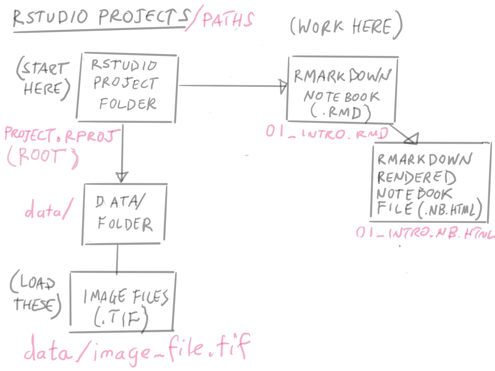
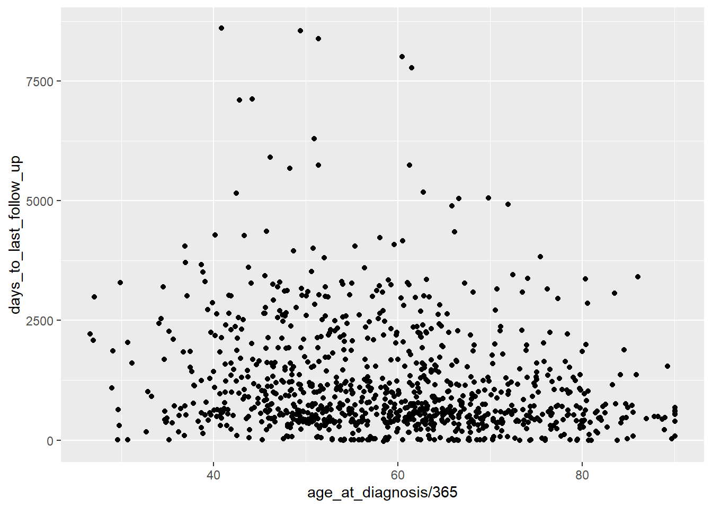
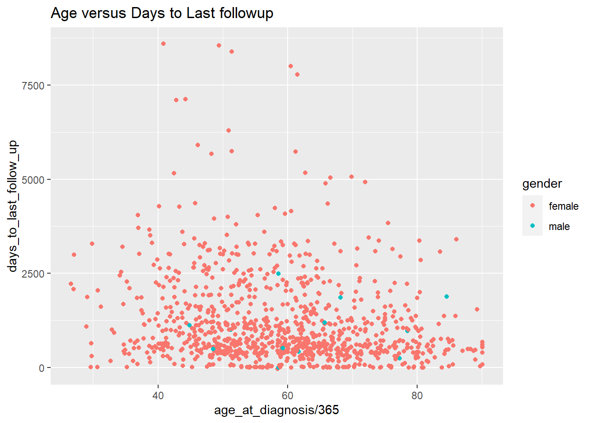
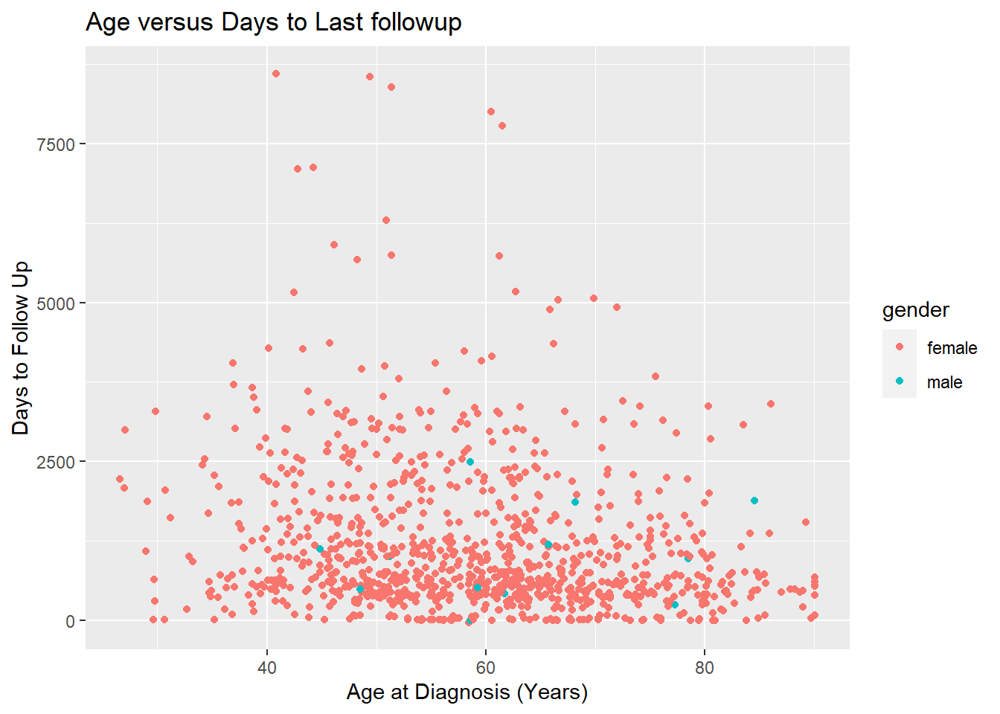

Chapter 3 Part 2: data.frames, Reading Data, visualizing data with ggplot2
In this session, we’ll continue our introduction to R by working with a large dataset that more closely resembles that which you may encounter while analyzing data for research.
3.1 Learning Objectives
By the end of this session, you should be able to:
- Import spreadsheet-style data into R as a
data.frame. - Understand properties of
data.frames, especially variables. - Visualize
numericvectors in this dataset usingggplot2
3.2 A note about Base R versus the Tidyverse
For the remainder of this course, we’ll be focusing on using functions from the tidyverse.
It is set up as a library - functions someone else wrote that are not built into R. We’ll use a few libraries in this course.
The Tidyverse is essentially a library of libraries – each contains functions that are either essential for or greatly simplify the process of data manipulation and visualization for data scientists.
We have already installed the tidyverse for you. For reading excel files, we need also load up an additional library called readxl.
3.3 Importing spreadsheet-style data into R

Once you have your notebook open, let’s talk about its location. It is located where the project.rproj file. The location of this file (also called an “RProject” file) is always considered the root directory of the project.
It’s where you start from that determines the file directory path for loading data.
Since this notebook, part2.Rmd is in the same folder as the project.rproj file, then when we need to refer to data files, it is relative to the root folder.
When you’re starting out, it’s best to keep your RMarkdown notebooks and files in the root folder. It will help prevent you from dealing with a lot of headaches.
3.3.1 A good place to put your data
Take a look at the data/ folder, and where the tcga_clinical_data.xlsx file is.
In our notebook, how do we refer to that file name? Since we’re in the root, we can refer to it as
data/tcga_clinical_data.xlsx
3.3.2 Loading our excel file
Now we can use a built-in function called read_excel() that will help us load our data into R:
You can see the excel file here: https://docs.google.com/spreadsheets/d/1E6jmCB9nfeIJ_zlSH6HJCUmKwwcMTWwP0EwEcAHo0CU/edit?usp=sharing
You should see brca_clinical appear in the Environment window on the upper right panel in RStudio. If you click on brca_clinical there, a new tab will appear next to your R script in the Source window.
Clicking on the name of an object in the Environment window is a shortcut for running
View(brca_clinical); you’ll see this code appear in the Console after clicking.
3.3.3 Challenge 1 (5 minutes)
Take a look at the documentation for read_excel(). This is a package in the package readxl, which is installed as part of the tidyverse.
- What does the
skipargument do? - Do we need to refer to a
sheetwithin an excel file as a number, or can we refer to it as the sheet name instead? - What does the
guess_maxargument do?
## starting httpd help server ... done[Your answers here]
Now that we have the data imported and assigned to an object, we can take some time to explore the data we’ll be using for the rest of this course.
3.3.4 Notes on the Data
- These data are clinical cancer data from the National Cancer Institute’s Genomic Data Commons, specifically from The Cancer Genome Atlas, or TCGA.
- Each row represents a patient, and each column represents information about demographics (race, age at diagnosis, etc) and disease (e.g., cancer type).
- The data were downloaded and aggregated using an R script, which you can view in the GitHub repository for this course.
3.3.5 Challenge 2 (5 minutes):
Inspect, and import the following sheets from the tcga_clinical_data.xlsx excel file.
Confirm that you have loaded them correctly by clicking on the objects in the Environment pane in the top right.
- The
CESCsheet. Save it ascesc_clinical. - The
LUSCsheet. Save it aslusc_clinical.
#load cesc_clinical here
#What should be the sheet argument?
#do you need to skip a line?
cesc_clinical <- read_excel("data/tcga_clinical_data.xlsx",
sheet = ____,
skip = ___
na = "NA"
)
#load lusc_clinical here
lusc_clinical <- Importing data can be tricky and frustrating. However, if you can’t get your data into R, you can’t do anything to analyze or visualize it. It’s worth understanding how to do it effectively to save you time and energy later.
We will be covering loading in another format that you can export from many different software programs, the comma separated value format, or csv format in another section.
3.3.6 Tips on Formating your excel file for R
Here are some tips on formatting your data to get it into R easier.
Click on the code block below to load up a graphic.

- Tidy is Best. Try to format your spreadsheet where the columns correspond to variables you’re measuring, and a row corresponds to an observation.
In our example:
- each row corresponds to a patient
- each column corresponds to a variable of clinical data
- each cell has a value
We’ll be seeing that this format is called Tidy Data, and it lets us do all sorts of things in R successfully.
Transpose is your Friend in Excel.* If your data isn’t in this format, no worries! You can copy it to a new sheet and use the transpose option when you’re pasting it, and then load that in.
Every column needs a name. Every one of your columns should be named at the top, and should begin with a letter. Numbers and special characters can cause errors in your data analysis pipeline.
Color information is hard to get into R. Avoid using color coding of cells if that is extra information attached to a cell. Instead, make the information the color is representing its own column.
Extra Lines are OK! Extra lines before the column header are ok, as you’ve seen. It’s sometimes better to have a “notes” sheet where you put extra information or, better yet, a data dictionary.
3.4 data.frames
Now that we have data imported and available, we can start to inspect the data more closely. These data have been interpreted by R to be a data frame, which is a data structure (way of organizing data) that is analogous to tabular or spreadsheet style data.
By definition, a data.frame is:
a table made of vectors (columns) of all the same length. As we learned in our last session, a vector needs to include all of the same type of data (e.g., character, numeric).
A data.frame, however, can include vectors (columns) of different data types. This makes them extremely versatile way of storing information.
3.4.1 data.frames - How do they Work?
To learn more about this data frame, we’ll first explore its dimensions:
## [1] 1095 16This output reflects the number of rows, then the number of columns.
We can also preview the content by showing the first few rows:
## # A tibble: 6 x 16
## submitter_id primary_diagnos~ tumor_stage disease age_at_diagnosis
## <chr> <chr> <chr> <chr> <dbl>
## 1 TCGA-3C-AAAU C50.9 stage x BRCA 20211
## 2 TCGA-3C-AALI C50.9 stage iib BRCA 18538
## 3 TCGA-3C-AALJ C50.9 stage iib BRCA 22848
## 4 TCGA-3C-AALK C50.9 stage ia BRCA 19074
## 5 TCGA-4H-AAAK C50.9 stage iiia BRCA 18371
## 6 TCGA-5L-AAT0 C50.9 stage iia BRCA 15393
## # ... with 11 more variables: vital_status <chr>, morphology <chr>,
## # days_to_death <dbl>, days_to_birth <dbl>,
## # site_of_resection_or_biopsy <chr>, days_to_last_follow_up <dbl>,
## # gender <chr>, year_of_birth <dbl>, race <chr>, ethnicity <chr>,
## # year_of_death <dbl>3.4.2 Column Names
We often need to reference the names of variables (also known as columns) in our data.frame, so it’s useful to print only those to the screen:
## [1] "submitter_id" "primary_diagnosis"
## [3] "tumor_stage" "disease"
## [5] "age_at_diagnosis" "vital_status"
## [7] "morphology" "days_to_death"
## [9] "days_to_birth" "site_of_resection_or_biopsy"
## [11] "days_to_last_follow_up" "gender"
## [13] "year_of_birth" "race"
## [15] "ethnicity" "year_of_death"It’s also possible to view row names usingrownames(brca_clinical), but our data only possess numbers for row names so it’s not very informative.
3.4.3 Okay, What’s really in it?
We can use glimpse() to provide a general overview of the object:
## Rows: 1,095
## Columns: 16
## $ submitter_id <chr> "TCGA-3C-AAAU", "TCGA-3C-AALI", "TCGA-3...
## $ primary_diagnosis <chr> "C50.9", "C50.9", "C50.9", "C50.9", "C5...
## $ tumor_stage <chr> "stage x", "stage iib", "stage iib", "s...
## $ disease <chr> "BRCA", "BRCA", "BRCA", "BRCA", "BRCA",...
## $ age_at_diagnosis <dbl> 20211, 18538, 22848, 19074, 18371, 1539...
## $ vital_status <chr> "alive", "alive", "alive", "alive", "al...
## $ morphology <chr> "8520/3", "8500/3", "8500/3", "8500/3",...
## $ days_to_death <dbl> NA, NA, NA, NA, NA, NA, NA, NA, NA, NA,...
## $ days_to_birth <dbl> -20211, -18538, -22848, -19074, -18371,...
## $ site_of_resection_or_biopsy <chr> "C50.9", "C50.9", "C50.9", "C50.9", "C5...
## $ days_to_last_follow_up <dbl> 4047, 4005, 1474, 1448, 348, 1477, 1471...
## $ gender <chr> "female", "female", "female", "female",...
## $ year_of_birth <dbl> 1949, 1953, 1949, 1959, 1963, 1968, 194...
## $ race <chr> "white", "black or african american", "...
## $ ethnicity <chr> "not hispanic or latino", "not hispanic...
## $ year_of_death <dbl> NA, NA, NA, NA, NA, NA, NA, NA, NA, NA,...The output provided by glimpse() includes:
- data structure:
data.frame - dimensions:
- column-by-column information: each prefaced with a
$, and includes the column name, data type (num, int, Factor)
Identify the numeric variables (they are noted as <dbl> or double). What are they?
Another useful command is View() - it will open up a spreadsheet like view of our data_frame. You can also view this by clicking on the brca_clinical object in the Environment pane in the top-right.
3.4.4 Summarizing our Data
Finally, we can also examine basic summary statistics for each column:
## submitter_id primary_diagnosis tumor_stage disease
## Length:1095 Length:1095 Length:1095 Length:1095
## Class :character Class :character Class :character Class :character
## Mode :character Mode :character Mode :character Mode :character
##
##
##
##
## age_at_diagnosis vital_status morphology days_to_death
## Min. : 9706 Length:1095 Length:1095 Min. : 116.0
## 1st Qu.:18032 Class :character Class :character 1st Qu.: 689.2
## Median :21562 Mode :character Mode :character Median :1223.0
## Mean :21587 Mean :1643.0
## 3rd Qu.:24863 3rd Qu.:2370.0
## Max. :32872 Max. :7455.0
## NA's :16 NA's :945
## days_to_birth site_of_resection_or_biopsy days_to_last_follow_up
## Min. :-32872 Length:1095 Min. : -31.0
## 1st Qu.:-24863 Class :character 1st Qu.: 434.2
## Median :-21562 Mode :character Median : 760.5
## Mean :-21587 Mean :1187.2
## 3rd Qu.:-18032 3rd Qu.:1583.2
## Max. : -9706 Max. :8605.0
## NA's :16 NA's :105
## gender year_of_birth race ethnicity
## Length:1095 Min. :1902 Length:1095 Length:1095
## Class :character 1st Qu.:1940 Class :character Class :character
## Mode :character Median :1950 Mode :character Mode :character
## Mean :1949
## 3rd Qu.:1960
## Max. :1984
## NA's :1
## year_of_death
## Min. :1992
## 1st Qu.:2001
## Median :2005
## Mean :2004
## 3rd Qu.:2008
## Max. :2013
## NA's :991For numeric data (such as year_of_death), this output includes common statistics like median and mean, as well as the number of rows (patients) with missing data (as NA).
For factors (also known as categorical variables), and character variables, such as disease, you’re given a count of the number of times the top six most frequent factors (categories) occur in the data frame.
We will talk more about factors in the next lab.
3.5 Introducing ggplot2
Click the button below to load up the graphic.

Now that we’ve loaded our data as a data.frame, we can begin to start doing things with it.
Let’s start with visualizing the data.
3.5.1 Working Towards a Graph
We’re going to work towards the following graph today:

3.5.2 ggplot2: A Grammar of Graphics
ggplot2 is an extremely powerful software library for visualization.
The gg is short for Grammar of Graphics, which means that visualizations are expressed in a very specific way.
3.5.3 Learning to read ggplot2 code
A ggplot2 graphic consists of a:
mappingof variables indatatoaes()thetic attributes ofgeom_etric objects.
In code, this is translated as:
#start the plot with ggplot()
ggplot(data = brca_clinical) +
# make the mapping
# map the x-axis to age_at_diagnosis
aes(
x = age_at_diagnosis,
y = days_to_birth
) +
# add the geometry
geom_point()Things to note: we chain these three things together with + (plus sign). I tend to read the plus as then.
[aes() function - mapping variables to visual properties of the graph]
3.5.4 Challenge
Based on the graph above, map the appropriate variables in brca_clinical to the x, and y aesthetics. Run your plot. Is it what you expected?
What’s missing compared to the graph above?
3.5.5 Simple arithmetic
Huh. age_at_diagnosis is in days, not years. We can fix that by dividing it by 365:
ggplot(data = brca_clinical) +
aes(x = age_at_diagnosis / 365 ,
y = days_to_last_follow_up ) +
geom_point()## Warning: Removed 120 rows containing missing values (geom_point).
3.5.6 Color
We can also map a character variable to our graph to color.
Try mapping gender to color.
3.5.7 Titles
We can add more details to our graph. We can add a title using the labs() function:
ggplot(data = brca_clinical) +
aes(x = age_at_diagnosis / 365 ,
y = days_to_last_follow_up,
color = gender) +
geom_point() +
labs(title="Age versus Days to Last followup") ## Warning: Removed 120 rows containing missing values (geom_point).
3.5.8 Changing the Axis Labels
We can change the x-axis titles and the y-axis titles using the xlab() (short for x label) and ylab() functions:
ggplot(data = brca_clinical) +
aes(x = age_at_diagnosis / 365 ,
y = days_to_last_follow_up,
color = gender) +
geom_point() +
ggtitle("Age versus Days to Last followup") +
xlab("Age at Diagnosis (Years)") +
ylab("Days to Follow Up")## Warning: Removed 120 rows containing missing values (geom_point).
Now we’ve re-created the above plot! Let’s save it using ggsave(). ggsave() saves the last created plot to a file. We’ll save it as a jpg file. ggsave() is smart enough to know that we want to save it as a jpg from adding the extension .jpg to our filename.
## Saving 7 x 5 in image## Warning: Removed 120 rows containing missing values (geom_point).3.6 What you learned today:
- Loading excel data and tips for formatting your data in excel
- Understanding basic properties of
data.frames - The basics of the “grammar of graphics” with
ggplot2
3.7 Practice
You can practice your ggplot2 skills by taking the first chapter of the R-Bootcamp:
3.8 Assignment (10 points)
Instructions: Turn your .nb.html file in with the following assignment finished. Make sure it is named part2_LASTNAME.nb.html, where LASTNAME is your last name, of course.
- Load the
smoke_complete.xlsxfile into R usingread_excel. You’ll need to take a look at it to make sure that your arguments are correct.
- Use
glimpse()onsmoke_complete. How many rows does the file have? How many variables does it have? What are the numeric variables in this dataset?
[Put your answer here]
- Produce a scatter plot of
smoke_completeusinggeom_point(), mapping these variables to the following aesthetics:
year_of_birth to the x aesthetic,
cigarettes_per_day to the y aesthetic, and
gender to the color aesthetic.
- Pick two
numericvariables, and a character variable in the dataset and produce a scatterplot by mapping them tox,y, andcolor. Add a title and change the x and y labels to make sense.